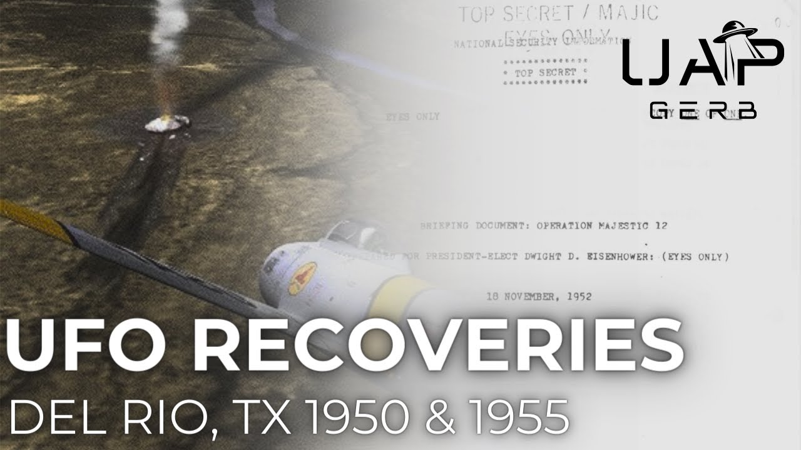

The 1950s Del Rio, Texas UFO Crashes

Published: 2024-05-17 · Duration: 30:52 · Channel: UAP Gerb
Description
A deep dive into two alleged crash retrievals near Del Rio, Texas that occurred in the 1950s. These cases are often confused with one another and research generally leads into a rabbit hole of conflicting information and details of the two cases. The two cases in question are:
- The 1950 El Indio - Guerrero crash as detailed in the 1952 controversial MJ12 Eisenhower Briefing Document
- The 1955 Colonel Robert B. Willingham crash retrieval sighting near Langtry, Texas
While the 1955 Willingham case features a signed affidavit, contextual military UFO sightings, and more from the surrounding time period, the 1950 case is much more enigmatic. Details are sparse, as is much with MJ12, but fascinating nationwide US UFO alerts, controversial NHI technology discovery by AT&T, and more lend context to this already intriguing story!
0:00 Intro 1:09 Eric Davis, MJ12, and Confusion 3:09 Colonel Robert B. Willingham 6:14 1955 Willingham Encounter 11:52 Willingham Crash 14:17 Crash Material 16:12 Bodies? 19:20 William Draeger 20:41 1950 vs. 1955 21:41 1950 El Indio UFO Crash 27:09 Conclusion
UAP Gerb Lockheed: https://www.youtube.com/watch?v=tVdzvvbbHW4&t=990s
UAP Gerb Stigma: https://www.youtube.com/watch?v=xKArN8S9bnM&t=877s
UAP Gerb Moon Dust: https://www.youtube.com/watch?v=6ZuHLgVtKu8&list=PL2uHqhmiO7Ck1Y48s_WfzcV50P6vUMaHh
CASE 1:
Willingham Obituary: https://www.newspapers.com/image/779548369/?terms=Colonel%20Robert%20Willingham
Eric Davis 1950s confirmation: https://silvarecord.com/2018/10/28/dr-eric-davis-confirms-del-rio-texas-ufo-event-was-a-successful-crash-retrieval-2/
https://www.coasttocoastam.com/show/2018-06-24-show/
Willingham Affidavit: https://archive.org/details/historyofufocras0000rand/page/192/mode/2up
Other Roswell Link: https://www.amazon.com/Other-Roswell-Crash-Texas-Mexico-Border/dp/098175970X
Case Summary: https://roswellbooks.com/?page_id=79
https://www.noufors.com/Colonel_Robert_B_Willingham.html
Noe Torres Presentation: https://www.youtube.com/watch?v=7tfGaGv_UnE
Jeff Rense Interview: https://www.youtube.com/watch?v=Xbryu6pNlzw&t=3069s
Civilian Air Patrol Penn Image: https://www.newspapers.com/image/344929850/?match=1&terms=Willingham%20mechanicsburg
Jack Perkins: https://www.findagrave.com/memorial/50311782/jack-donald-perkins
WW2 Veterans Memorial (Willingham Listed): https://sites.rootsweb.com/~ntexasrecords/Archer_Vets_Memorial.html
Condon report for 57 Case: https://archive.org/details/scientificstudyo0000unse_l5t2/page/56/mode/2up?q=1957
1957 related CIA Doc: https://www.cia.gov/readingroom/docs/DOC_0000015396.pdf
1955 USAF UFO Request: https://media.defense.gov/2021/Jul/13/2002761371/-1/-1/0/REPORT_AIR_FORCE_SECURITY_OFFICE.PDF
66 CIA UFO materials: https://www.cia.gov/readingroom/docs/DOC_0000214603.pdf
Original News Story: Nhttps://twitter.com/mrjeffknox/status/1750348291408286184/photo/1
Archives fire: https://www.archives.gov/personnel-records-center/fire-1973
1954 Texas Relevant Case: https://babel.hathitrust.org/cgi/pt?id=mdp.39015006091691&view=1up&seq=44&skin=2021&size=125
https://www.nicap.org/articles/540514dallas_article.htm
CASE 2:
Eisenhower Briefing Document: https://www.reaganlibrary.gov/public/2021-06/40-654-209237723-046-002-2021.pdf
Omni Magazine Crash at El Indio: https://archive.org/details/omni-archive/OMNI_1995_03/page/n33/mode/2up
1950 USA High Alert: https://www.secretsdeclassified.af.mil/Portals/67/documents/AFD-110719-004.pdf?ver=2016-07-19-125714-727
Dec 8 FBI alert: http://www.nicap.org/docs%5Foakridge/fbi%5F501208.htm
Sandia Labs: https://www.kirtland.af.mil/News/Photos/igphoto/2001261029/
https://www.sandia.gov/media/facts11.htm
Music By: https://www.youtube.com/channel/UCz71_7z7NphLPZ0l_7G3Llg https://www.youtube.com/channel/UCsagn2R7aYEbsYHkE0n4zYQ
ufo #uap #uapnukes #uapdisclosure #ufology #ufonews #ufosightings #uapsightings #ufofootage #uapfootage #hynek #condoncomittee #Jallenhynek #projectsign #projectgrudge #projectbluebook #bluebook #ufocongress #SOL #solfoundation #karlnell #Battelle #UFOreverseengineering #lockheed #skunkworks #lockheedmartin #rosscoulthart #fastwalker #blackvault #slowwalker #kingman #ufocrash #nickredfern #Grusch #Magenta #michaelherrera #USO #TimothyGallaudet #mystery #mysteries #unexplained #extraterrestrial #space #technology
Transcript
Show transcript
It didn't start or end with Roswell. Throughout American and world history, there are numerous encounters of UAP crash and crash retrieval efforts with credible paper trails and witnesses. And sometimes, these trails get messy. Details, records, and facts of one case may be confused with another, making it difficult to fully analyze the stories of these fascinating retrieval efforts. This is especially true for two cases along the arid desert border of Texas and Mexico. What's up guys, it's UAP GERP. Thank you so much for joining me today as we are going to cover a region of Texas near the Texas-Mexico border named Del Rio that experienced not one, but two alleged UFO crash and recovery operations during the 1950s. Over the years, these two cases have almost molded into one, but due to their insanely interesting stories and astonishing connections to ufology, each deserve to be analyzed with a critical lens. Are these cases fact or fiction? Join me today as we investigate to find out. In June of 2018, Dr. Eric Davis was interviewed by journalist George Knapp on Coast to Coast AM. And yes, this is the same Eric Davis from the Wilson Davis memo whose scientific pedigree cannot be understated. When the two legends of ufology begin discussing UFO reverse engineering efforts, the doctor states, quote, Yeah, they've got, I would say, you know, if you're going to throw your bets on Roswell, your bets really good. Del Rio, Texas, that was a 1950s case. That was another one. And the other ones I won't bring up because those are still classified. Researching the highly disputed MJ 12 documents leads us to another clue surrounding the Texas-Mexico border. Following the description of the Roswell case in the Eisenhower briefing document, the alleged MJ 12 document to brief the president incumbent highlights a case from the 6th of December 1950. This case saw a UFO of similar origin to Roswell impact the earth at high speeds along the El Indio area of the Texas-Mexico border. The craft impacted at such high speeds, it was nearly obliterated when the search team arrived. The recovered materials were transported to the atomic energy commission facility at Sandia, New Mexico for study. Okay, pretty cut and dry, right? El Indio is 75 miles southeast of Del Rio. So it makes sense to use this as a reference point, right? But there is another case that occurred in 1955 that researchers additionally use the Del Rio area as a reference point. The Colonel Robert Willingham crash retrieval case near Langtree, Texas. There are a number of huge factors separating these cases we will cover later in the video. But lack of study of these two cases has led to egregious misidentification between the two. So let's take a step back and analyze each case. Colonel Robert Burton Willingham served honorably in World War II in Korea. His distinguished career saw him within the US Army, Air Force, Air Force Reserves, and civilian air patrol. Serving in the US Air Force during Korea, Willingham claims to have received a purple heart for his severe wounds suffered to his leg and head when hit by a mortar shell and a foxhole. I use the word claims here very deliberately because I have not been able to verify any receiving of his purple heart. Now it is worth mentioning there are some respected ufologists like Kevin Randall in his book Crash where UFOs fall from the sky who doubt or call into question Willingham's Air Force service record. And this is because the National Personal Record Service in St. Louis, Missouri was unable to provide his service record. However, what is worthy to note on July 12, 1973, there was a fire in this building that destroyed most military records for personnel serving between 1947 and 1963. Now the author Noah Torres has stated he has over 50 documents to prove Willingham's Air Force service, but I have yet to see these documents. These injuries saw Willingham unable to return to combat, where he then returned to Texas as an Air Force Reserve pilot. On a spring day in 1955, the Colonel and Reserves were running a Cold War simulation mission where Willingham and other F-86 aviators assisted B-47 and B-52 bombers. It is on this mission, Robert claims to have experienced a crashed UAP. Before we get started, I would like to immediately cite my primary sources and discuss the history of Willingham coming public. I will primarily be pulling from the 2008 book The Other Roswell UFO Crash on the Texas Border written by Noah Torres and Ruben Uriarte due to the author's personal work and interviews with Robert near the end of his life in 2015. Robert first went public with his story in 1965, featured in a Pennsylvania weekly newspaper called Mechanicsburg. An article asking civilian air patrol pilots about UFO counters first oversaw the Colonel's story. 12 years later, researchers found clippings of this article in the NICAP, the National Investigations Committee on Aerial Phenomenon, lost in the annals of NICAP's files. Researcher Todd Zechel tracked down Willingham and made him sign an affidavit. And I do have to point out the inaccuracies between this article and the affidavit versus the other Roswell book I am referencing. In this article from 67 and affidavit from 77, Willingham states he was flying in F-94. He goes on to say in the other Roswell book he was actually flying an F-86 Sabre. In the article, he claims his experience happened in 1948, but in the book and other sources, Willingham claims to have seen the UFO in 1955. This he blames on a faulty memory due to the head injury he sustained in Korea, but this to me does in fact hurt Willingham's credibility. On a spring day in 1955, the Colonel and other F-86 aviators escorted B-47s for a Cold War simulation training exercise from the Carswell AFB. It's worth noting Willingham's serial number and call sign CD195 and Willie Eddy. The missions served to escort the bombers in their Texas leg of their New York to Texas to Washington state journey. Willingham stated the squadron had received intelligence by radio that fast-moving unidentified signatures had been picked up by the distant early warning radar systems, dues, located in Canada. These signatures were moving south towards Texas. During the mission, the pilot of the B-47 radioed in about an unknown aircraft picked up on radar moving south from the northwest. Willingham then saw a bright big object like a star coming his way. The object approached within 35 to 40 miles of the USF regiment at an estimated speed of 2,000 miles per hour. This was an estimate by Willingham because the craft seemed to go four times the speed of its F-86, which traveled at 685 miles per hour. Willingham described the brightly lit surface, quote, like magnesium steel. Other pilots, including George Smithson, stated they had also seen the craft in a post-incident debrief. The object made a 90-degree turn headed southwest towards the Mexican border. Shortly after the turn, the object was seen to emit, quote, a lot of sparks, and it tilted down at about a 45-degree angle. The colonel wondered if this was due to the abrupt turning maneuver causing hull damage. The object fell out of view and the colonel assumed it had crash-landed just west of Del Rio. Now quickly, there is no report of this sighting in 1955. However, we can look to the Condon Report I spoke of in my stigma video, which was created specifically to push the UFO stigma. Case 5 of the report lists a military UFO encounter from 19 September 1957, also from Carzwell Air Force Base in Fort Worth. In this recorded encounter, a large bright fireball alternating red to white chased a USAF RB-47 for more than 600 miles. The object was seen by flight crew, detected by Carzwell radar, and picked up by the RB-47's radar. Interestingly, the equipment for electronic countermeasures and reconnaissance aboard the RB-47 registered the UFO emanating a strong radar signal of 2800 megacycles. Quoted from the Condon Report from pilot Louis D. Chase, quote, Before any evasive action could be taken, the light crossed in front of the plane, moving to the right at a velocity far higher than airplane speeds. The light was seen by pilot and co-pilot and appeared to the pilot to be a glowing body as big as a barn, end quote. The Condon Report shockingly detailed how the ECM, graphic, and radar data were all removed upon landing by intelligence personnel. Onscreen now is the original CIA report of this incident. Anyways, back to Willingham. Familiar with the area, Robert estimated the crash to be in Langtree, Texas. He radio Denver flight controller, requesting permission to fly to the estimated crash site. Denver replied, quote, Yes, go check out what it was and where it hit. We want to know where it was, too, end quote. Willingham approached Langtree from San Angelo and brought his F-86 down to an altitude of near 800 feet. It was here he observed the wreckage of a disc-shaped craft, which collided with the ground just south of the Rio Grande on the Mexican side of the border. The craft had seemingly collided and skidded 300 feet across the ground. The colonel returned to mission and formulated a plan to visit the site privately when he returned to base. The colonel arrived to Corsicana Airfield, met his friend, and prepared to depart to the wreckage in a 1947 Erronka Champion. Willingham's friend slipped under the radar and faced no reprisals for this incident. His name was later revealed after his death in 2002, as Jack Perkins, a Pennsylvania electronics engineer who served in the Civil Air Patrol with Robert. Before we go on to the crash, there may be just a little more to Willingham's story than meets the eye. This unclassified document from the 18th of July, 1955, just months after Willingham's encounter, details a response request from USAF Captain Ladi Marin to a request from the commander of USAF Security Services in San Antonio. The commander was requesting for data on UFO sightings from NEAC, the Northeast Air Command, and Northwestern United States specifically from B-47 jets. This could very well be coincidence, but it is interesting how a USAF commander in San Antonio of all places was interested in B-47 UFO encounters right after Robert's sighting. And we do have another very relevant case from spring the year before Willingham's encounter, 1954. On May 14, 1954, a flight of marine reserve jets led by Major Charles Scarborough flew about six miles west of Dallas, Texas. The team spotted 16 unidentified signatures in groups of four. Pilot Scarborough and Jorgensen attempted to box these UFOs alternating between white to orange, similar to our other two cases. The signatures accelerated away rapidly at high speeds evading the Marines. Perkins and Willingham reached the crash area at about 4 p.m. The object had broken off into roughly three sections with debris strewn everywhere. The object appeared to be dome-shaped, 12 to 15 feet in length, resting 50 feet beyond the main body of the UFO. The main body appeared to be a flattened disc, 20 to 25 feet in diameter, split into two larger pieces. Half the disc was embedded into a sandy mound. While touching down, the two noticed Mexican soldiers, jeeps, and cars formed in a perimeter around the crash site. The two men approached the site and observed many pieces of debris, quote, there were lots of pieces of debris, some little and some large chunks about as big as a good sofa chair. Willingham noted the Mexicans were not attempting material gathering or retrieval effort of any kind. No trucks or airplanes were at the scene. The soldiers appeared to be simply standing perimeter on the site. After touching down quite a distance from the wreckage, Mexican soldiers approached the two men. One of these, an officer named Lieutenant Martinez from Mexico City, noted Willingham's use half fatigues and offered to take him near the site. But without Perkins, Martinez told Robert, we can't let anyone close to it. The American Air Force will be here very soon to clean this all up. Now, Willingham assumed the military men were from the closest army base, Ciudad Acuna, around 100 miles away. I have not been able to track down any record of a Lieutenant Martinez here. But according to Willingham's story, the Mexican government was simply guarding the wreckage for an American crash retrieval team to show up. This is a process claimed that pops up relatively often, such as the 1978 Bolivia crash retrieval I talked about in my Moondust video, which saw Bolivian authorities alerting American military to inspect the downed UFO. When departing the wreckage, Willingham decided he would not leave without evidence of the crash, so he grabbed a small piece of shiny metal debris. Upon returning to base, Willingham submitted an oral and written report to Reserve Commander Colonel Miller and soon received threats not to discuss his sightings, warning of consequences. One General in USAF Intelligence told him, quote, Don't say anything about what you saw down on the border. The material Willingham possessed was rigid, unyielding, but extremely light, and grayish silver in color. It reminded him of magnesium steel, small honeycomb patterned holes lined the side, which the Colonel figured was to dissipate heat. There was no inscription, symbols, or characters on it, unlike the Roswell material. This material shares little resemblance to the shape memory alloy found at Roswell and likely studied by Battelle Memorial Institute. Willingham tried to test the piece's material properties through a series of deformation tests, including torch cutting, all to no avail. According to Willingham, he possessed the material for four days, but in his haste to study the material took no images. The Colonel sent the fragment to USMC Metallurgy Lab in Hagerstown, Maryland. A USMC major received the material and was perplexed by the structure. Willingham gave him his number and address to receive the piece back. Some time later, Willingham contacted the lab to talk to the major. He was told no such person had worked there, nor did they know anything about this mysterious metal. There were no records of tests. He attempted to pursue the chain of command, but was told it would be in his best interest not to pursue the matter further. While Willingham's story may be suspect here regarding the materials, what is undeniable is the fact USG did in fact partake in the study of UFO materials. Even if you discount the Battelle-Roswell connection, we can analyze Project Moondust, tasked with recovering foreign space vehicles and UFOs, or the 1966 CIA memo titled, Exploitation of Metallic Fragment from Unidentified Flying Object, which discusses material from a fallen UFO recovered in the Congo. Now, this is one of the most troubling aspects of this case for me. In the other Roswell, there is a specific chapter on alien bodies. No mention of NHI is made here, quote, I never saw bodies. I was not able to get close enough and I don't know what happened after I left, end quote. Willingham reasons the most likely place for bodies, if there were any, would be under the dome shaped section of the craft. However, on a July 24th, 2012 interview with Jeff Rents, Willingham specifically states he saw bodies. Yeah. Okay, so the front of the craft that impacted the ground ripped a hole open inside and apparently people could see in there and there were dead ETs or they weren't humans, there were dead bodies in there of some kind. Right, right. And you couldn't get around there to see in there either. Well, I kind of snuck around. You're a sneaky fella, aren't you? All right, now tell you snuck around there a little bit, Colonel. What did you see? Well, it didn't look like human beings to me. How many of them were there? I believe there were three and the lieutenant said there were four. All right. I never did see the other one. Were the bodies mangled or were they relatively intact and what were they dressed in? Well, they weren't dressed at all. Okay. And they were in a lot of different pieces. I didn't see but one that had a complete top. But I wouldn't swear what he was eating. All right. What did the head look like? Anything like we've seen in the common research literature, the big eyes, the smooth skin or the little mouth. Did you see anything? Yeah, some of them that looked like that. They just, I don't know how you explain it, but they just, their heads and arms and stuff, their arms are a little bitty. They look like boomsticks. Well, okay. But they had a big room stick. All right. No, no, I got you. They had no uniform on. They were just basically skin if that's what their outer covering is. The point of bodies is reiterated in the 2023 presentation given by author of the book, Noah Torres, who additionally mentions bodies. Was this poor reporting in the book? I don't think so because Willingham is specifically quoted as not seeing bodies. I will absolutely not fall back in an argument that Willingham's memory in old age was failing him, causing him to remember details poorly. This is the argument he uses as to why some small inaccuracies exist in his affidavit, like the type of plane he was flying. I have reached out to Noah Torres for more comment on the bodies because as of now, this is a massive issue in Willingham's credibility. We do have an independent witness who can bring some interesting details to this case, former USAF member William Drager. Drager first appears in Leonard Stringfield's UFO crash retrievals reports in an entry titled Del Rio, Texas 1950. Here is another case of conflicting dates with our two cases. While this entry lists 1950, Drager clearly discusses Willingham's case. Drager, fluent in Spanish, was hired as an interpreter for a Japanese documentary discussing a UFO crash involving a colonel near the Mexican border. I have not been able to find this documentary, but I have seen screenshots from it in Noah Torres' book. In an affidavit provided, Drager details how he contacted a Mexican general who commanded that area of the border. Drager explains the case of the general and the general stated quote, yes, I know about that. I don't have any papers or documents to prove it, but due to my position, I know about that end quote. Drager, Willingham and the film crew met with the general who on camera denied and evaded any questions dealing with the incident and UFOs. According to Drager, this man was beyond reproach and a quote unquote military celebrity in Mexico. Before we get into the 1950 L Indio case listed in the Eisenhower Briefing MJ12 document, how can we concretely say these two incidents are not the same? Well, for starters, the memo describes the crashed object as totally incinerated, while Willingham's case describes three major pieces of wreckage. Two, the 1950 cases listed as occurring on December 6th, 1950. Willingham served in Korea until his injury, which occurred on December 26th, 1950. And three, the 1950 cases stated as occurring 75 miles south of Del Rio between El Indio and Guerrero. The Langstree location is 60 miles northwest of Del Rio. And finally point four, Willingham's case describes use of distant early warning or due systems. These were not implemented until 1952, so impossible to be associated with the 1950 case. So what exactly can we find out about this 1950 crash? From our alleged 1952 MJ12 memo, we observe a craft almost incinerated, recovered between El Indio, Texas, and Guerrero, Mexico. The wreckage is then sent to the Atomic Energy Commission's Sandia facility. And unfortunately, there really isn't too much to be found out about this case. I can reference a 1995 Omni Magazine article titled Crash at El Indio, alleged UFO crash in Mexico by Dennis Stacey. Stacey had conducted a mission from 1990 to 94 to decipher the crashed location and determine whether the story mentioned in the document was real or a hoax. Stacey found a town resident, Sr. Flores, who actually witnessed the event, quote, he had been working on his family's land north of town, north of the river in El Indio, when a ball of fire fell from the sky, crashing on the adjoining ranch and igniting a grass fire. A day or two later, a military contingent arrived from Pitas Negras, blocking off the location and hauled something away by truck. Flores was not aware if the military vehicles were Mexican, American, or a mix and had no idea if the wreckage was hauled away. Stacey thinks that possibly, but without confirmation, this could be describing a case of a civil air patrol plane crash that occurred on January 16, 1944. But this date, January 6, 1950, is a key date. On this day, a nationwide US alert was called at 1030 a.m. Eastern time regarding, quote, large number of unidentified aircraft approaching northeastern US at high altitude. Defense command is taking action to dispatch interceptors. No reason to believe they are friendly, end quote. Within the document, an estimated 40 signatures were spotted at 32,000 feet. Funny enough, General Raimi, yes, the same general from Roswell canceled this alert at 1316 hours. Interestingly enough, December 8, 1950, then sees a confidential memo directed to J. Edgar Hoover regarding flying saucers and how Army intelligence has been put on high alert for any data whatsoever on these flying discs. So while we really can't find any factual data on this L-Indio crash, we can find nationwide alert regarding UFOs at the same time. Does this FBI memo have to do with the Air Force Unidentified Craft Alert, or possibly a crash retrieval? We do know from the Guy Hoddle memo sent later this year, the FBI was in fact discussing crash retrievals and bodies. Apparently, UFO researcher Todd Zechel, yes, the same from Willingham's case, obtained a declassified USF document stating the military had recovered a foreign object on December 6 or 7 of 1950 and transported it back to Carswell AFB. But this unwillingness to provide any shred of proof of this document means we cannot consider this part of the case. So remember how the MJ-12 document mentions the debris was taken to Sandia Labs and into the hands of the AEC? Well, here's where things get interesting. We all know in the 2024 NDAA, the AEC was historically used to misclassify and obfuscate UFO information and likely more materials, legacy programs, etc. But Sandia Labs sits on the property of Kirtland Air Force Base in New Mexico. In 1949, President Truman handed over managerial responsibilities of Sandia to AT&T, yes, the phone company, the same one that made the transistor in the 1940s. Well, if we look at Stephen Greer's document archive of his disclosure project witness list, we can find two examples of redacted names, protected witnesses involving AT&T and NHI. One entry states, quote, witness from ACC with knowledge of ET technology transfer to AT&T, end quote, in the private industrial sector. Another which states, quote, President of Blank, knowledge of ET technology transfer to AT&T, he has been on radio sighting show, may have useful pseudonyms knows about the ET technology transfer program, end quote. And Kirtland itself along with Sandia has been forever intertwined with UFO lore. So this is extremely interesting how at the time of this alleged retrieval, Sandia managed by AT&T under Kirtland Air Force Base received this ET technology and Greer has multiple witnesses who comment on some sort of ET or NHI technology transfer to the company who knows maybe AT&T is one of our early suspects for UFOs in the private sector. I mean, after all, let's look back to my Lockheed Martin video to the claims of USAF Master Sergeant Edgar A. Fouch, who stated that Lockheed had reverse engineered the now infamous TR3B. He stated that part of this reverse engineering UAP program came from Sandia Labs. Remember AT&T managed Sandia until 1993 when it was taken over by you guessed it Lockheed Martin. So there's a lot more to investigate here and maybe a little bit more truth to this 1950 crash than meets the eye. Hey guys, thank you so much for watching and joining me as I investigated these 1950s Del Rio, Texas UFO crashes. When I started this investigation, I was just expecting to cover one case 1950. From everything I had read, I thought that Willingham story, the MJ 12 document, William Drager and so forth all covered one event. So when I read the book, the other Roswell by Noah Torres, which I highly recommended became clear that we were talking about two separate instances. I would like to know what you guys think especially about Willingham. I am eagerly awaiting the author to get back in touch with me because, at least to me, the body's claims, the conflicting claims are a huge red flag, massive. And I can't really consider this story as anything more than just a story until I have those details ironed out. It is already enough of a problem to me that Willingham changed small details on his affidavit. Sure, they might be small such as the aircraft he was flying in the year. However, these are still very important things to get right because if these details are wrong, the affidavit is pretty much null and void. It's kind of disappointing especially that he relies on head injuries in Korea to say there's these problems with his memories. But, you know, maybe I'll be able to find out a little more and give an update. I think the December 6 1950 crash is really interesting even though we don't have much details because that MJ 12 document and I made a post about this in community and I'll say it again. I think the MJ 12 documents combine a lot of disinformation and factual information similar to what Stanton Freeman claims. And to me, the context of this crash is super interesting, especially with Sandia Labs, Kirtland, the AEC, just all sorts of delicious puzzle pieces that kind of hook together and kind of weave into what we already think about when we already think of crash retrievals. I promise you guys that next episode is another whistleblowers video volume two. I got plenty of those. I got plenty of ideas, trust me. There's like a dozen, two dozen other crash retrievals I also want to cover and we'll get to them in time. I thank everyone so much for watching today. Please remember to like and subscribe and hey, if you think the channel is worth a little bit of cash, feel free to join that Patreon. I'm not going to keep gatekeep any of my content, only support what you think the channel is worth. And I'd like to get a thought from you guys. We're approaching 5000 subscribers. At 5000, I still wanted to do a video explaining the origins and taxonomy of NHI that was a deleted slide in Carl Nell Soul Foundation presentation. So if you guys want to see that, let me know. If everyone just wants more research, that's totally fine too. I love making these videos. It doesn't matter what I make. I just want to research. I want to put stuff out there that I think is worth talking about and discussing. So you let me know what you guys want and please in the comments let me know what you thought of these cases. I really want to know what you guys think about Willingham. Am I being too harsh here? I don't think I am. I think I'm just kind of weighing the facts. This case is a little different to some others like Roswell. Roswell of course is our best documented crash with all the affidavit signed and all the witnesses and even something like Kingman with Arthur Stansel. Sure, we have about one affidavit as well to describe that story with some connecting things like Dr. Ed Dahl and Eric Wang and so forth. But the fact of the matter is with Stansel, we don't have details in his affidavit that change. So I think Willingham's story, while fascinating, has a lot less credibility, but there is a lot of context around his citing that is pretty interesting, such as other B-47 signings. So thank you guys. Appreciate it and I will catch everybody on the next show.
Entities
People (51)
- Air Force
- Air Force Reserve
- Air Force Reserves
- Arthur Stansel
- Battelle Memorial Institute
- Carswell AFB
- Charles Scarborough
- Ciudad Acuna
- Condon Report
- Corsicana Airfield
- Del Rio
- Dennis Stacey
- Ed Dahl
- El Indio
- Eric Davis
- Eric Wang
- Erronka Champion
- Fort Worth
- George Knapp
- George Smithson
- Guy Hoddle
- J. Edgar Hoover
- Jack Perkins
- Jeff Rents
- Kevin Randall
- Ladi Marin
- Leonard Stringfield's
- Lieutenant Martinez
- Louis D. Chase
- Mexico City
- New Mexico
- New York
- Noah Torres
- Northwestern United States
- Omni Magazine
- Pilot Scarborough
- Pitas Negras
- Project Moondust
- Robert Burton Willingham
- Robert Willingham
- San Angelo
- San Antonio
- Sandia Labs
- St. Louis
- Stanton Freeman
- Stephen Greer's
- Todd Zechel
- UAP GERP
- William Drager
- Willie Eddy
- Wilson Davis
Places (6)
- Kingman
- Mexico
- Pennsylvania
- Texas
- the Carswell AFB
- the Texas Border
Organizations (12)
- Army
- CIA
- Carl Nell Soul Foundation
- Carzwell Air Force Base
- Kirtland Air Force Base
- Lockheed
- The American Air Force
- USAF
- the Air Force Unidentified Craft Alert
- the National Investigations Committee on Aerial Phenomenon
- the US Air Force
- the US Army
Download transcripts: SRT · VTT · JSON · TSV